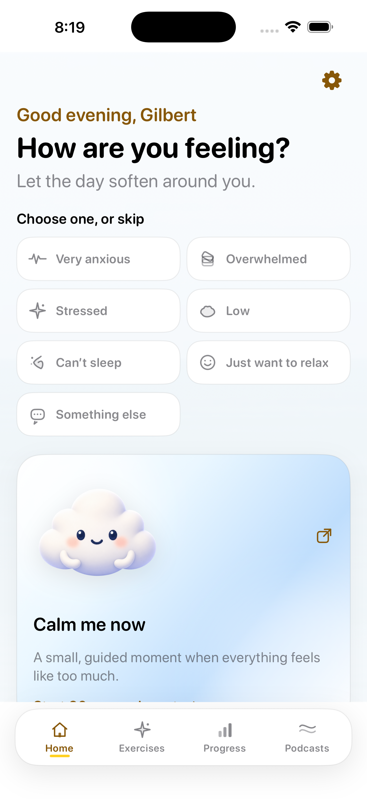
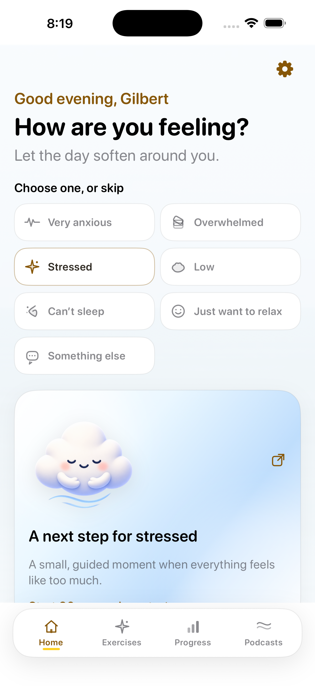
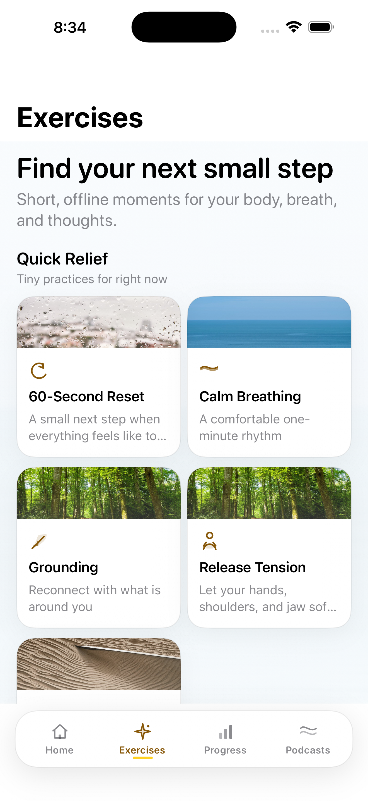
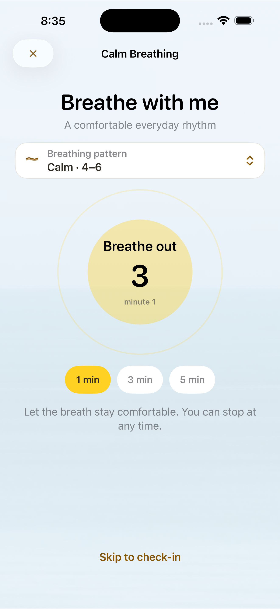
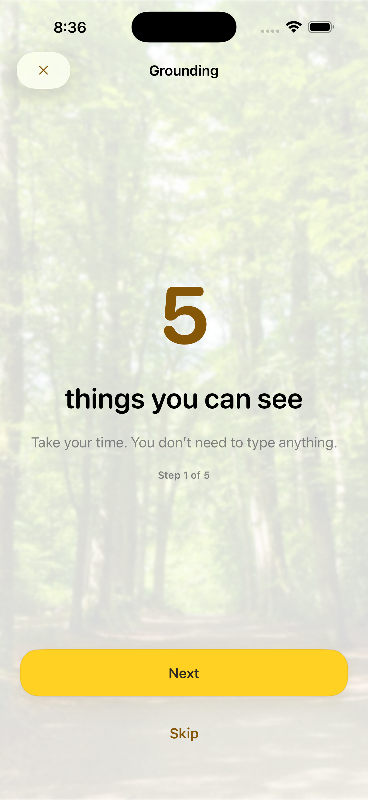
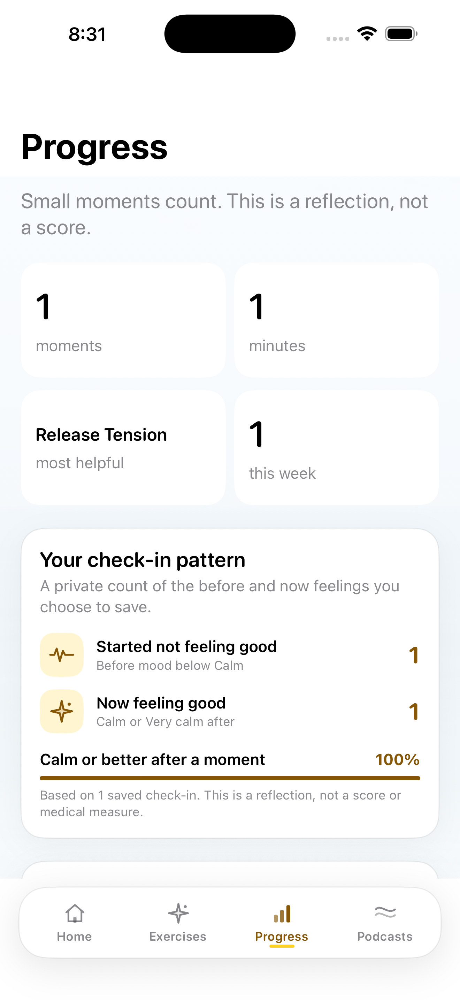

Name the moment
Choose an experience—or skip it. No questionnaire, no pressure.
Your breathing buddy
Bree helps you pause, breathe, and find one small moment of relief—offline, private, and gentle.
No account · No feed · No data leaving your device
Meet Bree in motion
Our portrait-composed welcome moment keeps Bree’s full face and gentle reminder in view—so the first few seconds feel calm, not crowded.
A smaller path through a loud moment
Bree meets you with a simple check-in, then suggests a short practice that matches how you feel.
Choose an experience—or skip it. No questionnaire, no pressure.
Follow a reset, breath, grounding cue, or quiet body exercise.
Optionally check in afterward. Your reflection is yours, not a score.
Inside Bree
Use the part that fits: a one-minute reset, a longer exhale, a private reflection, or a local sound bed for the room.
Calm breathing, grounding, progressive release, and thought-settling moments are designed to be easy to start and easy to leave.
See the experienceA local calendar and reflection view help you notice patterns without turning wellbeing into a leaderboard.
Choose a softer breathing rhythm, quiet body practice, or a soundscape that stays on your device.
Set the atmosphere
Local rain, ocean, forest, and brown-noise sound beds bring a little space to your practice. No streaming required.
A look inside
Browse the real Bree experience from onboarding through a finished reflection.






A quiet boundary
Bree does not require an account, send check-ins to a server, or include an analytics or advertising SDK. Reflections are optional and stored locally.
Read the privacy policyQuestions, answered simply
No. Bree is designed to work offline without an account or network connection.
No. Bree offers general relaxation and wellbeing exercises. It does not diagnose or treat a condition and is not emergency or crisis care.
Any exercise can be skipped or stopped. Choose what feels comfortable and contact local emergency services if you may be in immediate danger.
Ready when you are
The App Store link will be connected before launch. Until then, explore the experience and keep this page close.
Get Bree on the App Store